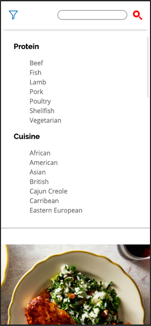

I would like to modify my homepage for my 232 project website to allow for a navigation bar that is resposive and becomes a sticky dropdown menu.
Trigger: The user clicks the filter icon at the top of the screen in the navbar
Rules: The screen has a width less than 940px
Feedback: A filters menu becomes visible below the filers bar. When the user scrolls, the nav and menu stay fixed in their posiiton on the screen.
Loops: N/A
Modes: N/A